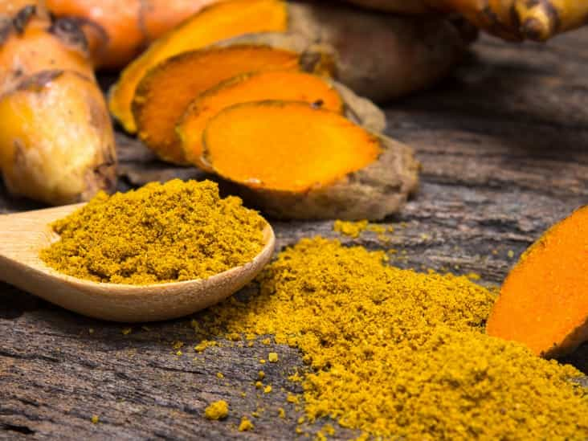

Mr. Luthra is an author and artist who writes about news, fitness, culture, and anything else that meets his interests. If you like his style, visit The Straightforward Voice, where you can find more FREE content.


After struggling for five years, Dieneke Ferguson is now cured of cancer and living a normal life all thanks to turmeric. Her cancer continued to spread after several rounds of chemotherapy and stem cell transplants, and so she turned to took 8g of turmeric per day. Now she’s cured, and it is the first recorded case of its kind.
What a great way to start the new year with an event like this that exposes the fallacy of drugs and unnecessary surgery which the FDA labels as “safe and effective” without substantial proof of it being so.
Ferguson is walking fine, but the legs of Big Pharma are shaking. Now that this is out, it’s going to raise a lot of questions in people’s minds. People are going conclude, “Hey, if turmeric can cure cancer, I wonder what else is out there that we don’t know about…”

Turmeric is known very well throughout the Eastern world. Ayurveda praises its medicinal powers for healing ailments. In addition to the anti-cancer effects Ferguson experienced, turmeric also has anti-inflammatory, and immune boosting properties. If you have a problem with drinking milk, adding turmeric powder can aid in digestion enabling those to consume diary who otherwise wouldn’t be able to.
It also slows and reverses the effects of aging as it contains curcumin, a powerful compound that has been found to slow telomere shortening while expanding its length naturally.
Turmeric is also one of the most powerful anti-oxidants as shown in the USDA’s ORAC list.
When I was doing research during grad school, I developed a nutraceutical that included turmeric. One of the common concerns I got heard from others was that turmeric has a low bio-availability. That’s why I added black pepper, a trick from Ayurveda.
Adding a pinch yields a whopping 2000% increase in the curcumin found in turmeric as proven in a study done in India. What a coincidence that this combination is regularly practiced in India. The doctors must have already known this combination from their roots, and merely proved it in a lab.
Other Eastern cultures use herbal combinations as the ancients discovered their effects thousands of years ago. If you eat curry dishes in India or the Middle East, you see them cooking with herbs like cinnamon, cayenne pepper, and sumac. China and Japan also eat meals that contain herbs indigenous to their lands.
Doctors don’t know how to respond while they shuffle through pages in their books of allopathy. A plethora of data confirms that turmeric and other natural herbs and botanical plants have powerful medicinal applications. The problem is the greedy scum in the drug industry can’t patent them, so they can’t monopolize like they do with every other sinister wonder pill they develop. Chaos found in nature disturbs globalists. It’s just not part of their who they are.
The medical establishment forbids anything other than drugging people up and surgery which has not done well for curing diseases. “Modern medicine” is primarily about profit, and the only thing medical science seems to be doing these days is simply proving what ancient medicine has been saying for thousands of years. In the past, if you used herbs you were called a hippie or a witchcraft practitioner by fanatics, but now the truth is becoming clearer.
The drug industry has been silencing these natural remedies for decades for fear of profit loss, even though there are several natural alternative remedies for virtually every disease known to man. These are purposely suppressed, because the $400 billion dollar pharmaceutical industry would go bankrupt and the corrupt heads of these companies don’t want that. They’d rather see you suffer and die than allow you to be healed by anything other than a pill.
Drugs and surgery have their place in emergency situations, but they haven’t done well in promoting longevity and well being.
This is a big slap to the corrupt medical establishment. Let them try, but this story can’t be buried. The rise of natural remedies will flourish. Thomas Jefferson did say that the future doctor will educate people on prevention rather than supplying endless prescriptions, and so perhaps this is a step in making such natural alternatives more mainstream.
The rabbit hole goes much farther than this, so if you want to know more, brace yourself before continuing, because you’ll discover a dark entity called Big Pharma, who wants to drug every life form on planet Earth.
Read More: 7 Resons Why Extra Virgin Olive Oil Is The Original Superfood For Men